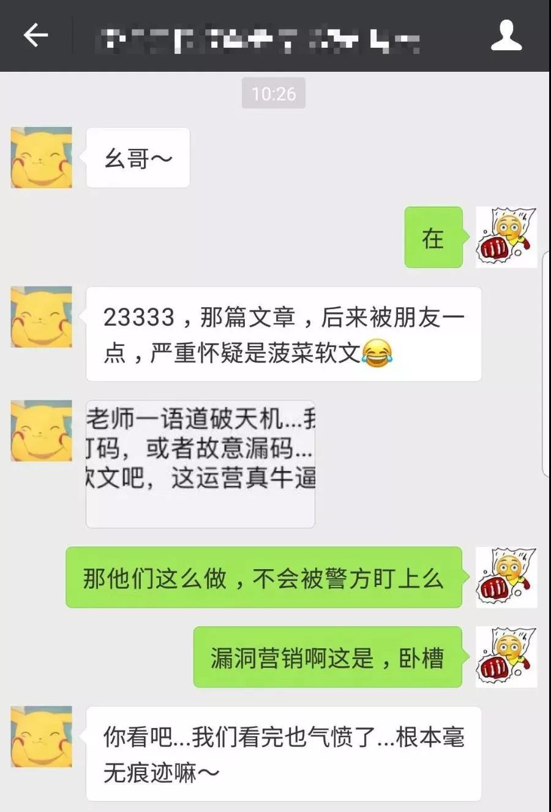
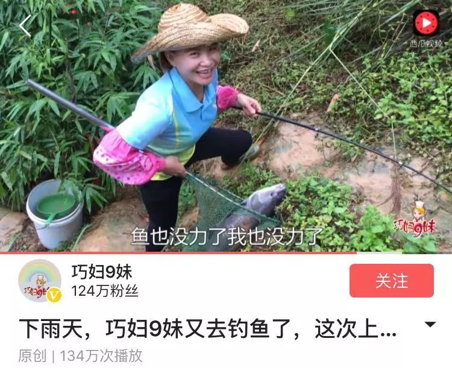
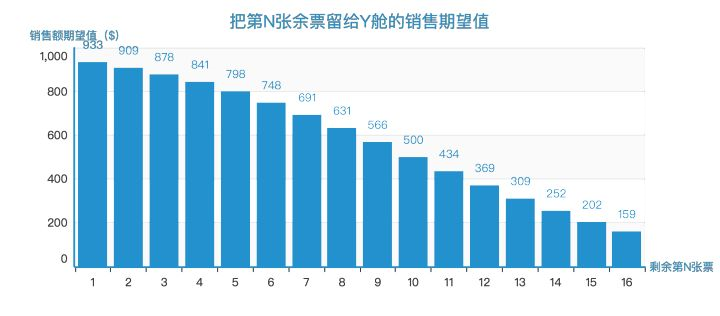

本期主题：营销
专门推荐近期好文。点击蓝色字体的文章标题即可阅读原文。
这个赌博网站的用户增长策略，闪瞎了我的腰。。。。。。
令人耳目一新的操作！
原文摘录：
一个赌博网站，能在新闻客户端、贴吧、论坛等多个内容渠道推广，还会利用冲突的情节制造爆款假新闻吸引人们传播，甚至吸引权威大号主动转载，再利用漏洞营销的方式进行最后的转化。

从普通农妇到单月卖出150万的橘子，年入千万，农村自媒体的想象力有多大？
原帖已删，网上仍可以搜到转载。虽然令人振奋，但是9妹的成功，很难复制。农产品+互联网直销，到底能走多远？
原文摘录：
巧妇9妹”一个月的电商销售额能到150万，最高时突破200万。除此之外，与今日头条&西瓜视频签约后，流量+直播收益每月有50万左右。“巧妇9妹”的年收入预计达到千万。

每日优鲜CEO：在获客方面，我们只做了两件事
我首次且唯一购买过的生鲜电商（去掉京东天猫这种巨头）。同年诞生的还有小红书。本文较详细地描述了该公司的创业逻辑和运营逻辑。
直接扔笔记吧：
-
变化有 2 种。
- 波动
- 趋势
-
除了农业，零售是变化最慢的行业。
-
零售业本质上做的是趋势性投资，和波动其实没有什么关系。
-
越来越方便获得商品，这是零售行业的大趋势，这是没有变化的。
-
从 2015 年到 2025 年这十年，中国买菜的人群会变成80后、90后、00后：
- 互联网催生的一代：信息首选互联网，而不是线下。
- 独生子女一代：基本没干过家务活。
- 结论是：提供到家的、精选的、成品的食物。
-
每日优鲜的目标：让每个人能够随时随地享受食物的美好。
- 用户，用户的需求场景
- 后台能力：满足用户需求的能力，包含供应链、会员、数据、物流体系
-
关于精益创业
- MVP 不是为了上线而快速上线。而是需求假设的验证。
- 第一步产品快速上线，想解决的是对用户需求的所有假设进行验证。
-
一开始的时候不要怕生意小，生意做的好才是最重要的。
-
「全品类精选」的两个核心要点，一个是全，一个是精。
-
在获客这方面，我们就做了两件事：一个是社交化，一个是会员制。
- 老客户
- 老客户比新客更重要。
让老客户满意很重要，让他惊喜更重要。他满意之后，自己就会去传播，这时候你会获得新客户。 - 获得老客户超出满意的口碑效应。
- 老客户比新客更重要。
- 口碑
- 越是在这样一个时代，越要学会用口碑的力量，口碑的力量它慢一点，但是它持久，而且是指数性放大的，坏东西也会指数性的放大。
- 我们总结下来得有几个关键点：有趣、有钱、有货、有情，你要制造出足够多的适应不同人群需求的内容，你的社交就会放大。
- 两个闺密之间转这个才叫真友谊，不装，好东西大家分享，我们在朋友圈转一点有逼格的，微信群里面可以转这个。
- 无人零售的本质是在一个新的增量场景上创造了很多增量消费，当然也有很多存量消费抢了一点。它有用户价值，因为太方便。
卖草莓和卖机票一样吗？
- 老客户
（大）数据杀熟的“正确”叫法——收益管理。或者说杀熟是大数据时代一种收益管理方法。
原文摘录：
收益管理就要帮这样的生意做到四个正确：在正确的时机，把正确的产品，以正确的价格，卖给正确的客户。后来，又有人加上了「正确的渠道，正确的打包」，当然这些也可以算作广义的产品属性。
万变不离其宗，目的是要把土豪和平民的钱都挣了，用手中的库存实现最大的收益。
在过去30年中，航空、酒店、租车、铁路、旅游团、货运、游轮等旅游物流行业已成为收益管理的「传统应用行业」，近年来，收益管理又有趋势向媒体、医疗、制造、服装、餐饮、和金融业等「新应用行业」拓展。

大数据/AI + 工业
这位阿里程序媛有点拼，爬8米高的锅炉，竟是为了这个！
出于本人对制造业的日常热忱。真正深刻改变世界的，很多都是在这些日常生活里接触不到的地方。
原文摘录：
云超是阿里云人工智能算法专家：“我们首先要是生产工艺师，其次才是人工智能算法工程师。”
“工业领域的东西专业性很强。把人的经验教给工业大脑，可以让计算机帮助人决策。我们是为了减轻你们的工作量、提高你们的工作效率而来的，不是为了取代你们而来的。我们能做的只是帮你们发现问题，解决问题还是要靠你们。”宇西讲清楚来意后，工人师傅们才消除了疑虑。
在向工人师傅请教时，宇西又遇到挑战：“沟通要用他们的语言，不能直接说数据。”
数据
一个优秀的商业分析师是如何炼成的
生动讲述了，为什么商业分析师的分析成果经常被认为是无用的。“这一刻，我突然明白了为什么数据分析在企业内不被重视。因为值钱的是数据，不是数据分析。”这里的数据指的是数据所指示的对象，即实际业务的环节。如果数据分析的结果是“要提高转化率”，这就是不够格的分析，应当至少是“可以从这些角度提高转化率”，而且如果提供的角度在业务上不可行，那也是白瞎的分析。那商业分析师如何了解业务呢？